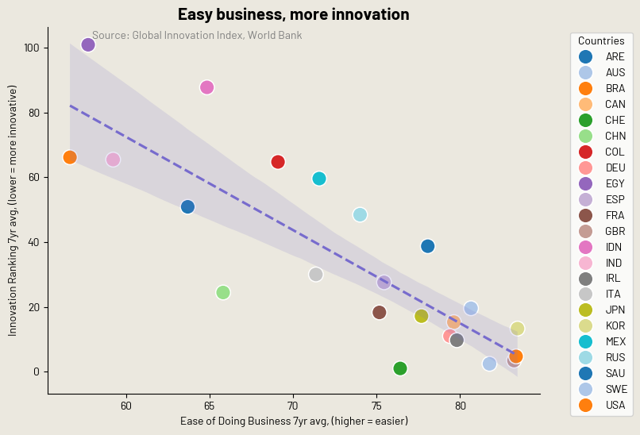

I embedded these charts from the Economic Observatory while adapting them to my
own visualisation flavor. Some would be ready to trade today's technology for the £1 pint of bitter !
To read more about them,
refer to Economic Observatory.
There has been many mentions of bureaucracy slowing or obstructing innovation. Here I was interested in seeing whether charts could provide some light on the story.
Chart on the left re-creation of the GDP evolution chart. The original chart is on the right, and the improved chart is on the left. The improved chart has a better color scheme, font, and overall design.


This represents the outflow and inflow of student studying abroad either as part of exchange programs or to study abroad. Anglo-saxon countries are considred the most attractive